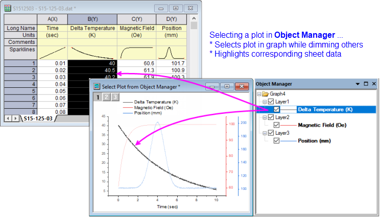
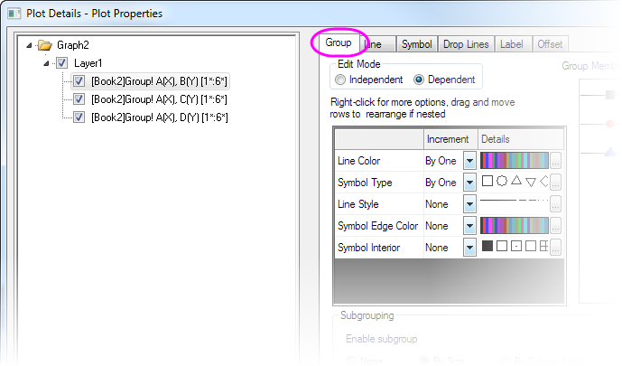
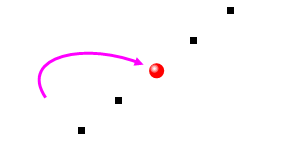
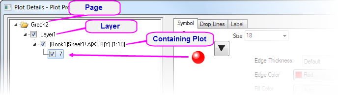
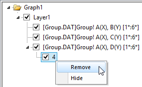
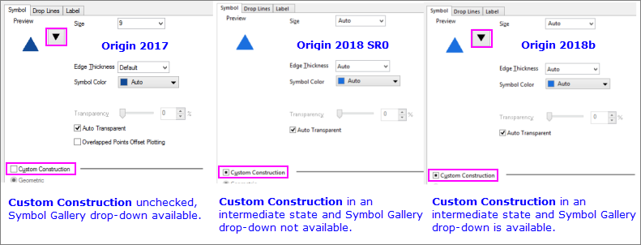
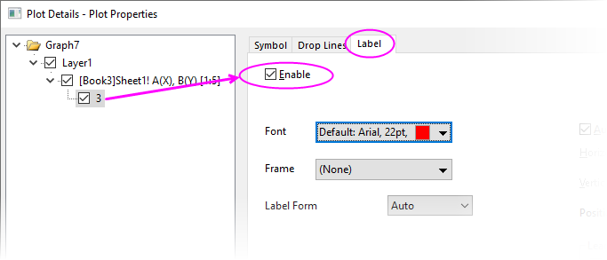
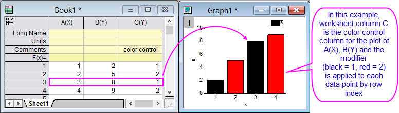

Diagrammelemente benutzerdefiniert anpassen
Customize-Plot-Element
Im Unterschied zu den Bedienelementen des Dialogs Details Zeichnung auf Seiten- und Layerebene beziehen sich die Bedienelemente der Zeichnungsebene auf spezifische Diagrammtypen oder eng miteinander verwandten Gruppen von Diagrammtypen. Diese Seite erläutert allgemeine Strategien zum Anpassen der Bedienelemente auf Zeichnungsebene.
Siehe auch diese Themen zum benutzerdefinierten Anpassen von Bedienelemente, die viele Zeichnungen gemeinsam haben:
-
Datenzeichnungen auswählen und bearbeiten
Im Diagrammfenster ...
- Klicken Sie einmal auf eine Zeichnung, um die Zeichnung auszuwählen.
- Drücken Sie die Strg-Taste und klicken Sie einmal auf einen einzelnen Datenpunkt, um ihn auszuwählen.
- Um eine Zeichnungsgruppe auszuwählen, drücken Sie die Umschalt-Taste, während Sie auf die Zeichnung klicken.
 |
Dies ist eine Änderung im Verhalten der Zeichnungsauswahl im Vergleich zu älteren Versionen. Vor Origin 2020, wenn Sie mit unabhängigen (nicht gruppierten) Zeichnungen arbeiteten, klickten Sie einmal auf eine Zeichnung, um die gesamte Zeichnung auszuwählen. Durch eine Pause und einen zweiten Klick wurde ein einzelner Datenpunkt ausgewählt. Beim Arbeiten mit abhängigen Zeichnungen (gruppierten Zeichnungen) klickten Sie einmal auf eine Zeichnung, um die Gruppe auszuwählen. Durch kurzes Pausieren und einen zweiten Klick wurde eine einzelne Zeichnung ausgewählt. Durch kurzes Pausieren und einen dritten Klick wurde ein einzelner Punkt ausgewählt. Um zum Auswahlverhalten vor 2020 zurückzukehren, setzen Sie @GSM = 0.
|
In der Objektverwaltung ...
- Klicken Sie auf ein Zeichnungssymbol. Es werden gleichzeitig die Zeichnung im Diagrammfenster und die zugehörigen Daten im Arbeitsblatt ausgewählt (umgekehrt wird durch Auswahl einer Zeichnung im Diagrammfenster das entsprechende Zeichnungssymbol in der Objektverwaltung und die zugehörigen Daten im Arbeitsblatt markiert).
- 
Bearbeiten Sie Ihre Auswahl:
- Einige Zeichnungseigenschaften können schnell über Minisymbolleisten oder über die Symbolleistenschaltflächen Format und Stil (z. B. Farbe des Zeichnungssymbols) modifiziert werden, obwohl der Zugriff auf Eigenschaften auf häufig verwendete Hilfsmittel beschränkt ist.
- Andere können verändert werden, indem mit der rechten Maustaste das Kontextmenü geöffnet und eine der Optionen ausgewählt wird (z. B. schnelles Wechseln des Diagrammtyps).
- Um komplexere Anpassungen durchzuführen, öffnen Sie den Dialog Details Zeichnung durch einen Doppelklick in das Diagrammfenster. Alternativ wählen Sie bei aktivem Diagrammfenster Format: Seite, Layer oder Zeichnung.
Gruppierte Diagramme anpassen
Wenn Diagramme im Layer gruppiert werden, legt Origin standardmäßig die Anzeigeeigenschaften eines jeden Diagramms automatisch fest. Sie können allerdings gruppierte Diagramme über das Dialogfeld Details Zeichnung anpassen (beachten Sie, dass einige Anpassungen von gruppierten Diagrammen auch über die Farblistenoptionen in der Symbolleiste Stil durchgeführt werden können).
- 
Weitere Informationen finden Sie in Bedienelemente auf der Registerkarte Gruppe im Dialog Details Zeichnung in der Origin-Hilfedatei.
Diagrammtyp schnell wechseln
Origin ermöglicht das "schnelle Wechseln" des Diagrammtyps von einigen allgemeinen Zeichnungen:
- Klicken Sie zum Öffnen des Dialogs Details Zeichnung doppelt auf die Zeichnung. Alternative Diagrammtypen werden unter Diagrammtyp unten im Dialog aufgelistet.
- Klicken Sie mit der rechten Maustaste auf eine Zeichnung im Diagrammfenster oder in der Objektverwaltung und wählen Sie Zeichnung ändern in im Kontextmenü.
- Klicken Sie, um die Zeichnungen oder Zeichnungen, wie oben beschrieben auszuwählen, und klicken Sie dann auf die jeweilige Diagrammschaltfläche auf der Symbolleiste 2D-Grafiken.
Der Dialog Details Zeichnung und die Kontextmenüs führen nur Diagrammtypen auf, die schnell gewechselt werden können. Wenn eine Symbolleistenschaltfläche zum Ändern des Diagrammtyps verwendet wird, wird eine Warnung! angezeigt, um Sie darüber zu informieren, dass der Wechsel nicht unterstützt wird.
Einzelne Datenpunkte benutzerdefiniert anpassen
Für einige Diagrammtypen wie Punkt- und Säulendiagramme können Sie die Anzeigeeigenschaften eines einzelnen Datenpunkts modifizieren:
-
- 
Speziellen Punkt erstellen
Es gibt einige Möglichkeiten, um einen speziellen Punkt zu erstellen und benutzerdefiniert anzupassen:
- Klicken Sie einmal auf einen Punkt und klicken Sie dann ein zweites Mal. Es handelt sich hierbei nicht um einen Doppelklick, sondern zwei separate Klicks. Alternativ drücken Sie die Strg-Taste und klicken Sie. Beide Aktionen markieren den Punkt, so dass Sie ihn mit Hilfe der Minisymbolleisten oder der Symbolleistenschaltflächen Stil und Format benutzerdefiniert anpassen können.
- Drücken Sie die Strg-Taste und klicken Sie doppelt auf den Datenpunkt. Der Dialog Details Zeichnung wird für diesen speziellen Datenpunkt geöffnet, in dem Sie die Einstellungen nach Bedarf festlegen können.
Passen Sie den speziellen Punkt im Dialog Details Zeichnung benutzerdefiniert an:
- Der Baum auf der linken Seite des Dialogs Details Zeichnung zeigt Ihren speziellen Datenpunkt unter der Datenzeichnung an, die ihn enthält.
- Die Indexnummer der Arbeitsblattzeile dieses Datenpunkts wird rechts neben dem Symbol des speziellen Datenpunkts angezeigt.
- Wenn der spezielle Punkt im linken Bedienfeld von Detaila Zeichnung markiert ist, verwenden Sie die Bedienelemente auf den Registerkarten rechts, um ihn benutzerdefiniert anzupassen.
- Um den speziellen Punkt anschließend zu bearbeiten, klicken Sie einmal, um ihn erneut auszuwählen, und passen Sie ihn mit den Minisymbolleisten oder den Symbolleistenschaltflächen Stil und Format benutzerdefiniert an; oder klicken Sie doppelt auf den speziellen Punkt, um den Dialog Details Zeichnung zu öffnen.
- 
 |
Das Hinzufügen eines speziellen Punkts am Anfang oder Ende eines Diagramms ist nicht immer einfach, zum Beispiel bei einem Liniendiagramm aus vielen Datenpunkten. Es ist jedoch eine einfache, kinderleichte Methode:
- Wählen Sie einen speziellen Punkt irgendwo auf der Zeichnung. Klicken Sie dann doppelt auf den Punkt, um den Dialog Details Zeichnung zu öffnen.
- Klicken Sie im linken Bedienfeld von Details Zeichnung In the einmal auf die Indexzahl des Punktes und warten Sie, bis die Indexzahl bearbeitbar wird.

- Um den speziellen Punkt zum ersten Punkt in der Zeichnung hinzuzufügen, geben Sie Begin ein; um ihn zum letzten Punkt hinzuzufügen, geben Sie End ein. Wenn Sie die Indexzahl des ersten und letzten Punktes kennen, können Sie diese stattdessen eingeben.
- Klicken Sie außerhalb des Bearbeitungsfelds. Passen Sie den speziellen Punkt weiter nach Bedarf an und klicken Sie dann auf Anwenden oder OK, um Details Zeichnung zu schließen. Der spezielle Punkt wird zum Anfang oder Ende Ihrer Zeichnung hinzugefügt.
|
Speziellen Punkt aus der Zeichnung entfernen
Um die "spezielle" Zuordnung zu entfernen und zu den Anzeigeeigenschaften der enthaltenen Datenzeichnung zurückzukehren:
- Markieren Sie den Punkt, klicken Sie dann mit der rechten Maustaste und wählen Sie Speziellen Punkt entfernen im Kontextmenü (aktivieren Sie nicht Daten in Arbeitsblatt löschen, da dies den Datenpunkt aus dem Arbeitsblatt löscht).
- Markieren Sie den speziellen Punkt in der Objektverwaltung, klicken Sie mit der rechten Maustaste und wählen Sie Entfernen.
- Markieren Sie den Punkt im Diagramm und drücken die Taste Entfernen oder wählen Sie den Punkt im linken Bedienfeld des Dialogs Details Zeichnung und wählen Sie Entfernen im Kontextmenü (diese Aktionen löschen den Datenpunkt nicht aus dem Arbeitsblatt).
- 
Hinweise für Anwender von Upgrades
Upgrade-Kunden der letzten Versionen bemerken vielleicht eine feinen Unterschied bei den Standardeinstellungen des Dialogs Details Zeichnung zum benutzerdefinierten Anpassen eines einzelnen Punkts:

Einzelnen Datenpunkt benutzerdefiniert anpassen:
- In Origin 2017 kann der Punkt benutzerdefiniert angepasst werden, wenn Benutzerdefinierte Konstruktion aktiviert oder deaktiviert ist.
- In Origin 2018 SR0 sollte entweder das Kontrollkästchen Benutzerdefinierte Konstruktion des Zwischenzustands deaktiviert oder das Kontrollkästchen aktiviert werden.
- Seit Origin 2018b können Sie den Punkt unabhängig von dem Zustand des Kontrollkästchens Benutzerdefinierte Konstruktion benutzerdefiniert anpassen.
Einzelne Beschriftung benutzerdefiniert anpassen
- Falls die Beschriftungen bereits für alle Punkte aktiviert sind, drücken Sie die Strg-Taste und klicken Sie einmal auf eine Beschriftung. Verwenden Sie dann die Symbolleiste Format, um die Beschriftung benutzerdefiniert anzupassen. Alternativ können Sie die Strg-Taste drücken und doppelt auf den gewünschten Punkt klicken, um Details Zeichnung zu öffnen. Verwenden Sie dann die umfassendere Registerkarte Beschriftung, um Ihre Beschriftung zu benutzerdefiniert anzupassen.
- Wenn Sie Beschriftungen nur für einen einzelnen Punkt zeigen möchten, drücken Sie die Strg-Taste und klicken Sie einmal, um einen Einzelpunkt auszuwählen (Symbol, Balken etc.). Klicken Sie dann in der Minisymbolleiste auf die Schaltfläche Datenbeschriftungen zeigen
 . Die Beschriftung kann mit Hilfe der Schaltflächen der Symbolleiste Format benutzerdefiniert angepasst werden. Alternativ drücken Sie die Strg-Taste und klicken doppelt auf einen einzelnen Punkt. Der Dialog Details Zeichnung wird geöffnet, in dem Sie auf die Registerkarte Beschriftung klicken, die Beschriftungen aktivieren und weitere Bedienelemente auf der Registerkarte verwenden, um Beschriftung und Stil der Daten festzulegen. In beiden Fällen geben die Bedienelemente der Registerkarte Beschriftung den aktuellen Beschriftungsstatus wieder (ob Schrift, Größe etc. angezeigt werden).
. Die Beschriftung kann mit Hilfe der Schaltflächen der Symbolleiste Format benutzerdefiniert angepasst werden. Alternativ drücken Sie die Strg-Taste und klicken doppelt auf einen einzelnen Punkt. Der Dialog Details Zeichnung wird geöffnet, in dem Sie auf die Registerkarte Beschriftung klicken, die Beschriftungen aktivieren und weitere Bedienelemente auf der Registerkarte verwenden, um Beschriftung und Stil der Daten festzulegen. In beiden Fällen geben die Bedienelemente der Registerkarte Beschriftung den aktuellen Beschriftungsstatus wieder (ob Schrift, Größe etc. angezeigt werden).
- 
|
Um eine benutzerdefinierte Beschriftung neu zu positionieren, ziehen Sie sie mit Ihrer Maus.
|
Datenzeichnungen Punkt-für-Punkt benutzerdefiniert anpassen
Sie können einen einzelnen gezeichneten Punkt oder eine Beschriftung, wie oben beschrieben, modifizieren; oder Sie können Datenpunkteigenschaften systematisch mit Hilfe eines Datensatzes modifizieren. Auf diese Weise können Sie Elemente wie Symbolfarbe, Symbolform oder Symbolstil (gefüllt, hohl etc.) mit Werten in einer Spalte, die Arbeitsblattdaten enthält, steuern. Werte in dieser Spalte steuern die Punkteigenschaften für die zugehörigen Zeilenwerte.
Sie weisen die modifizierende Spalte zu, indem Sie den Datensatz aus einer Auswahlliste mit den relevanten Bedienelementen (Farbe, Symbolform etc.) im Dialog Details Zeichnung auswählen.

Weitere Informationen finden Sie unter diesen Themen.